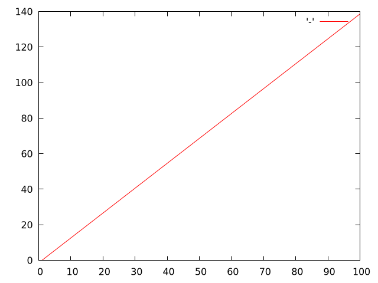
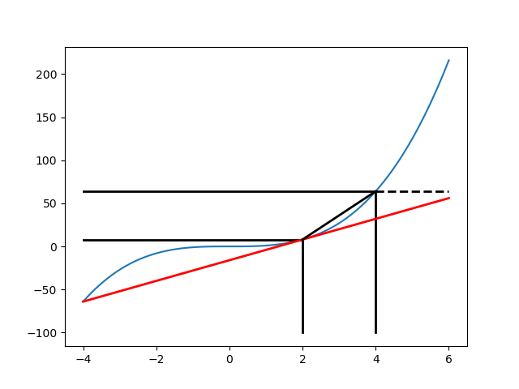
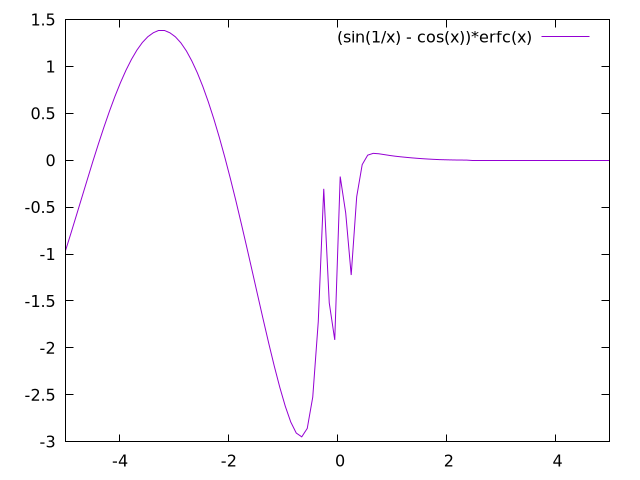
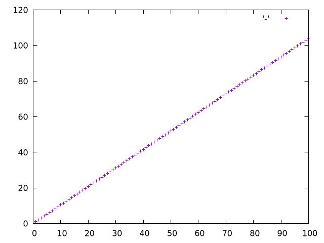

Table of Contents
1. An Introduction to Differential Equations
1.1. Why are Differential Equations an important technique for computational modelling in psychology and neuroscience?
1.1.1. The Action Potential classExercise
- 10 minutes to brush up on what an action potential is.
- Then be able to draw one on the board and explain,
- What are the axes?
- What ion causes the upward deflection?
- What causes the repolarization?
- Who discovered the action potential?
- Who won the Nobel Prize for characterizing the ionic events of the action potential experimentally and building a mathematical model?
- Did you draw this? ../../../images/Action_potential_basic_shape.pdf https://commons.wikimedia.org/w/index.php?curid=44114666
1.1.2. Why is the action potential relevant for a discussion of DE's in modelling?
The computational model of the action potential is a partial differential equation and action potentials, "spikes", are often taken to be the information processing unit of the nervous system.
DE's are the way we capture dynamics, how things change over time. If you think some neural or cognitive process that you are interested in is changing over time, then you are interested in dynamics and the first approach you should think of for modelling it is a differential equation.
1.2. Notation
Concise summaries of things that would take too long to write out in detail. Mathematical notation is just a technical emoji. You probably know the "math" they represent; you just don't know the abbreviation that is being used.
Write out in long hand (or type on your computer) what is meant by the following:
\[\sum_{\forall x \in \left\{ 1 , 2 , 3 \right \}} x ~=~ 6\]
1.2.1. Multiple Ways to Say the Same Thing
\(\frac{dy}{dx}\)
\(\dot{x}\)
\(x'\)
\(f'(x)\)
Moral: Don't let weird symbols put you off trying to understand. Plenty of musical people can't understand a score. Just because you don't understand a mathematical score does not mean you don't understand the mathematics.
1.3. Differential Equations: General Facts
1.3.1. What is a differential equation?
Give me an answer that uses no equations. Just words.
1.3.2. What is a derivative?
Give me an answer that uses no equations. Just words.
1.3.3. Derivatives are Slopes
- What is a slope?
- When in doubt return to definition.
- Deriving the definition of a derivative.
- What is the definition of a derivative?
- Digression: Use your computer as a tool for exploration
1. Launch a new notebook 2. Create a =code= cell 3. Use the *magic* for python plotting 4. =import= the needed libraries (do you know what a library is?) 5. create a =list= of numbers 6. create a second =list= of different numbers 7. plot them.
import matplotlib import matplotlib.pyplot as plt import numpy as np xs = [1,2,3,4,5] ys = [2,4,6,8,10] plt.plot(xs,ys) plt.savefig("./images/p_p.png") return("./images/p_p.png")

- What is the Slope of a Curve?
(ql:quickload '(:eazy-gnuplot :clml.statistics :clml.utility)) (use-package :eazy-gnuplot)
(defun scatter-plot (output) (let ((point-max 100) (point-type 7) (point-color "red") (step-size 1) (slope 0.4)) (with-plots (*standard-output* :debug nil) (gp-setup :terminal '(pngcairo) :output output) (plot (lambda () (loop for p from 1 upto point-max by step-size do (format t "~&~a ~a" p (+ (- p step-size) (* (- p step-size) slope))))) :with `(:lines :lc :rgb ,point-color))))) (scatter-plot "./images/s-p.png")

Figure 1: A line drawn with gnuplot called from common-lisp library "eazy-plot". Note the programmatic use of plot commands. Much harder to get started. Much greater control later on.
- Thinking About Slopes
- Describe in words a reallife scenario that matches the process being plotted above.
- How would you define a slope for a curve like this?
- How do you find the slope of a curve?
from matplotlib import pyplot import matplotlib.pyplot as plt import numpy as np a = np.linspace(-4,6,num=120) b = [x**3 for x in a];#list comprehension plt.plot(a,b) plt.plot([2,2],[-100,8], 'k-',lw=2) plt.plot([-4,2],[8,8], 'k-',lw=2) plt.plot([4,4],[64,-100], 'k-',lw=2) plt.plot([-4,6],[-64,56], 'r-',lw=2) plt.plot([-4,4],[64,64], 'k-',lw=2) plt.plot([4,6],[64,64], 'k--',lw=2) plt.plot([2,4],[8,64], 'k-',lw=2) plt.savefig("./images/curve-slope.png") return("./images/curve-slope.png")

Figure 2: The slope of a curve illustrated. In this example I use a series of python commands and the python numpy library. There are many ways to get things done. Find one that works for you, and try to think about how to learn something that will serve you long into the future, and not just the tool that meets immediate needs.
- Derivatives are Instantaneous Slopes
You pick two points that are "close enough" and you get an answer that is "close enough." If your answer isn't "close enough" then you move your points closer, until in the limit there is an infinitesimal distance between them.
Definition:
\[\frac{dy}{dx} = \lim_{h \to 0}\frac{f(x + h) - f(x)}{(x + h) - x}\]
- What is a square root?
What is the solution to \(y=x^2\) if I tell you what \(y\) is?
Intuition Pumps for how to solve it
- Come up with a guess (e.g. in your head what would you guess is the square root of 128?).
- Write a formula that would allow you to compute the error (or how far off you were).
- How much should you adjust your guess to get closer to the correct answer?
- What is the derivative of \(x^2\)? Does it have a place in your formula?
- Give a reason graphically why you ought to be able to use this derivative to help improve your guess.
- What happens to the sign of the "adjustment" when our guesses go from giving us too big an answer to too little an answer.
- Analytical Solutions
Let software be your guide.
f(x) := x^2; tex(diff (f(x), x));
\[2\,x\]
\(\mbox{Error} = \mbox{(my guess)}^2 - \mbox{128}\)
\(\frac{\Delta~\mbox{Error}}{\Delta~\mbox{Guess}} = \frac{\mbox{Error(Guess1) - Error(Guess0)}}{\mbox{Guess1} - \mbox{Guess0}}\)
\[\frac{\mbox{dError}}{\mbox{dGuess}} = \frac{\mbox{f(Guess1)} - \mbox{goal} - \mbox{f(Guess0)} + \mbox{goal}}{\mbox{Guess1} - \mbox{Guess0}}\]
#Error Plot #What is square root of 55? plotData = [(x**2-55,x) for x in np.arange(5.0,8.5,0.01)] plt.plot([y[1] for y in plotData],[x[0] for x in plotData],) plt.plot([5.0,8.5],[0,0],'r-') plt.plot([np.sqrt(55),np.sqrt(55)],[12,-30],'r-') plt.plot([5.0,8.0],[-30,0],'k--') plt.plot([8.0,8.0],[-5,15],'g--') plt.plot([8.0,8.0-(9.0/16)] , [9.0,0.0],'b')
[<matplotlib.lines.Line2D at 0x7f582e0d0fd0>]

plotData = [(x**2-55,x) for x in np.arange(7.3,7.6,0.01)] plt.plot([y[1] for y in plotData],[x[0] for x in plotData],) plt.plot([7.0,7.5],[0,0],'r-') plt.plot([np.sqrt(55),np.sqrt(55)],[3,-3],'r-') xs = [np.sqrt(55)-1/4,np.sqrt(55)+1/4] plt.plot(xs , [16*x-119 for x in xs],'b')
[<matplotlib.lines.Line2D at 0x7fc1a1d709b0>]

- Pandas
There are a lot of tutorials out there, e.g. Panda for Beginners
By the way: you can actually run web pages inside of a Jupyter notebook
from IPython.display import IFrame IFrame('http://pandas.pydata.org/pandas-docs/stable/',width='100%',height=350)
<IPython.lib.display.IFrame at 0x7f3d20123940>
If you have heard of data.frames in the programming language R then you basically know what Pandas is for. It is an effort to provide the same functionality for Python. Think of spreadsheet where you have alabel or a name for a column of data.
- Common Programming Constructs
- Constants
- Variables
- Iterators (like for loops or while loops)
- Functions
import pandas as pd #Constants guesses = [8.0] ; #what is the difference between the 8.0 having or not having the square brackets? errors = [10000] tolerance = 0.01
- Finding Cube Roots
- What is a cube root?
- What is the derivative of \(x^3\)?
- Find it with Python
- Write two Python Functions: one to
returnthe cube of a number, and one toreturnthe derivative when evaluated at a particular value ofx.
x = Symbol('x') y = x**3 print(diff(y,x))
3*x**2
Here is the basic syntax for a function in Python.
#Local Functions def cube (x): return(x**3) print(cube(10))
1000
Now you write the formula for the derivative.
def derivCube (x): return(3*x**2)
a = [1,2,3,4] print(a[0]) print(a[-1])
1 4
while (abs(errors[-1]) > tolerance): errors.append(cube(guesses[-1]) - 128) guesses.append(-1*errors[-1]/derivCube(guesses[-1]) + guesses[-1]) pd.DataFrame({ 'errors' : errors, 'guesses' :guesses })
errors guesses 0 10000.000000 8.000000 1 384.000000 6.000000 2 88.000000 5.185185 3 11.409643 5.043729 4 0.308434 5.039687 5 0.000247 5.039684
1.4. A freestanding version
Note bene: Sometimes to figure out what is going wrong with a function you need to debug.
One simple way to do this for simple programs is to place print
statements at strategic points in your code so that you can see whether
the variables you are using have sensible values for test cases you can
do in your head or on paper.
For larger and more complicated programs you would write a test set that with known inputs and outputs and you would evaluate your program on these known cases to verify sensible behavior in an automatic fashion. Sometimes you will see the phrase test driven development to capture this technique.
def cube (x): return(x**3) def derivCube (x): return(3*x**2) def cubeRoot(n,initGuess = 5.0): guess = initGuess error = 10000.0 tolerance = 0.01 i = 0 while (abs(error) > tolerance): error = cube(guess) - n #print(error) guess = -1*error/derivCube(guess) + guess return(guess) def main(): testNum = input("Cube root of ?\n") print("Answer is: {0}\n".format(cubeRoot(float(testNum)))) if __name__ == "__main__": main()
Cube root of ? 746 Answer is: 9.069421980736077
:CUSTOMID: instructions
We will work on this in class. Your goal is to write the code for a spring using a differential equation to help you update your calculation of position as a function of time. Here is a skeleton of what you will need to get going.
#What inputs and "magics" do you need? #What is the equation of a frictionless spring? #What is it you are plotting? def spring(inputs): #might need more than one input, might not #stuff here return();#something has to go in there def plot(inputs): #inputs just a place holder, you have to supply details #stuff here return(); #return something? def main(): s = spring(1);#1's are just here to make this work without above inputs defined p = plot(1) quit = False if (not quit): q = input('Type y to quit, any other key to continue') if (q != 'y'): main() main()
1.5. Part 2
Provide the code for the damped oscillator. It has the formula of
\[ \frac{d^2 s}{dt^2} = -P~s(t) - k~v(t) \]
This should really only require changing one line of your code for the simple harmonic oscillator.
1.6. Can I make a simple plot?
1.6.1. First we need a bunch of stuff
T
1.6.2. Now a basic example?
Here is a "cookbook".
The examples make use of a local subdirectory called "images". Create it.
The first cookbook example seems to use a function we don't need: png-from-file. This is probably related to the cookbook being a jupyter notebook.

1.6.3. Scatter Plot Example
